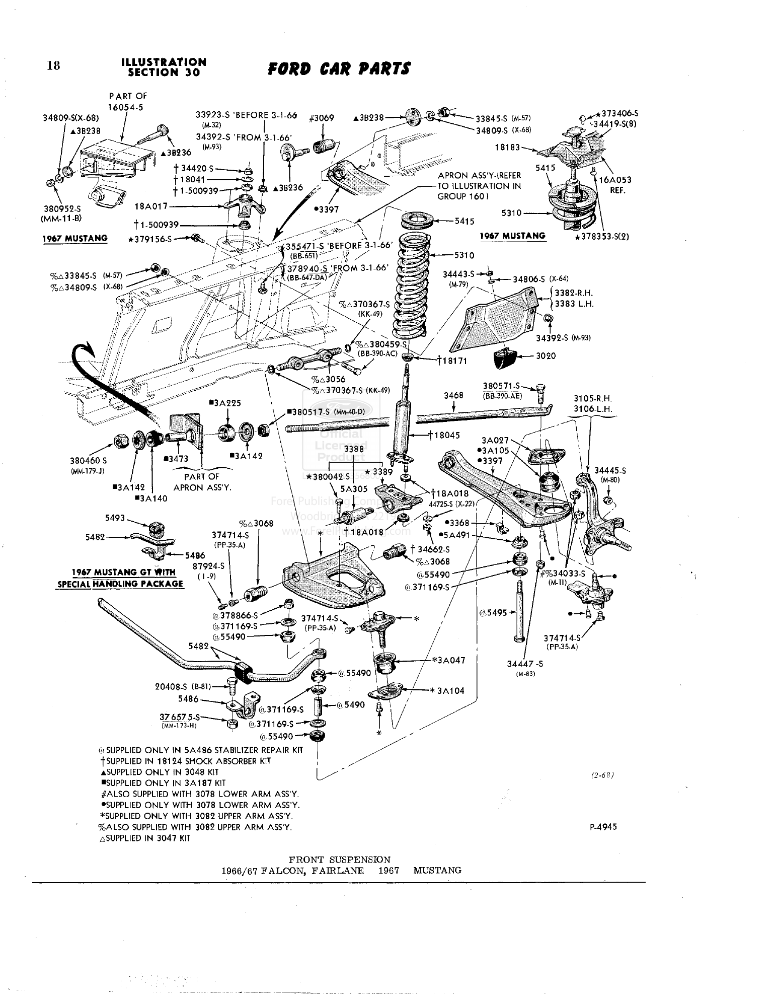

Ford Car Master Parts and Accessories Catalog, illustration 30–18, Forel edition. The highlights were added for this explanation; they are not part of the question given to the model.
Correct answer
Where to look
How the models did
These are the saved answers from the assessment, not new attempts. Scores are unchanged; the notes below describe what each answer got right or wrong.
Model results are unavailable.
That example wasn’t found. Please choose one of the three questions on the main page.